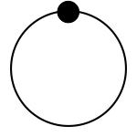

Spinners
Simple CSS3 rotation animations.
Or keep reading to learn more...
Simple CSS3 rotation animations.
Or keep reading to learn more...
Simply add the .spinner class to any object to apply a CSS3 rotation animation.

<img class="spinner" src="spin.png">
CSS3 animations work in IE 10+ and all modern browsers.